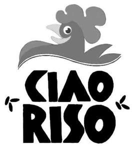

Trade Mark Journal No.2025/011 14 March 2025
UK00004158809 11 February 2025 (29,30)

- Class 29
- Rice milk; Bouillons; Preparations for making bouillons; Milk substitutes; Processed edible seeds; Preserved legumes; Cooked legumes; Dried legumes; Vegetarian hamburgers; Vegetarian sausages; Preserved mushrooms; Prepared mushrooms, ready-made mushrooms, processed mushrooms; Dried edible mushrooms; Dried truffles [edible mushrooms]; Legume preserves; Legume salads; Processed legumes; Legume mousses; Legume-based creams; Canned legumes; Vegetable-based snacks; Legume-based snacks; Preserved, frozen, dried and cooked fruits and vegetables; Fruit-based snacks.
- Class 30
- Rice; food preparations on a rice basis; rice pasta; freeze-dried dishes with the main ingredient being rice; rice-based snack food; rice and chocolate based snack food; rice cakes; rice pudding; edible rice paper; prepared or preserved sauces to season dishes made out of rice; saffron [seasoning]; processed quinoa; processed grains; cereal bars; cookies, brioches, crackers, cakes, bread, pastries, cereal preparations, all the aforesaid products with the exclusion of products made of wheat flour; pizza bases with the exclusion of products made of wheat flour; buckwheat flour; corn flour; edible flours with the exclusion of wheat flour; legume flour for food; processed buckwheat; milled corn; semolina corn, barley meal; crushed barley; husked barley; crushed oats; husked oats; oatmeal; spelt flour; crushed spelt; husked spelt; millet flour; crushed millet; husked millet; chia flour; processed chia; acacia flour; processed acacia; amaranth flour; processed amaranth; fonio flour; processed fonio; cocoa based beverages containing also rice; coffee based beverages containing also rice.
Riso Gallo S.p.A.
Representative: Boult Wade Tennant LLP